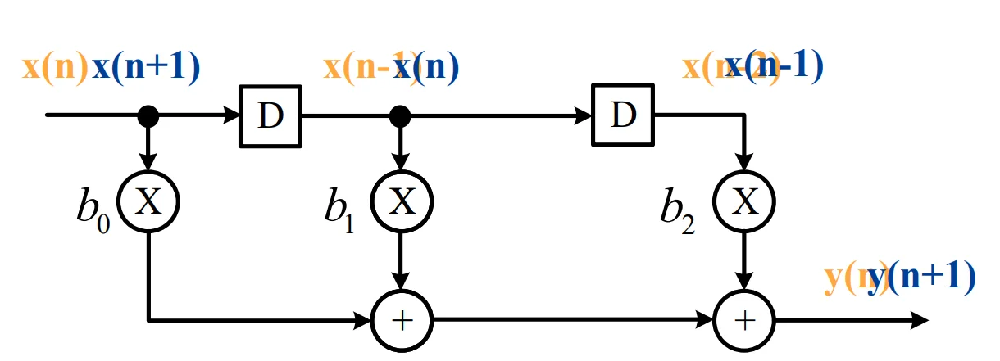
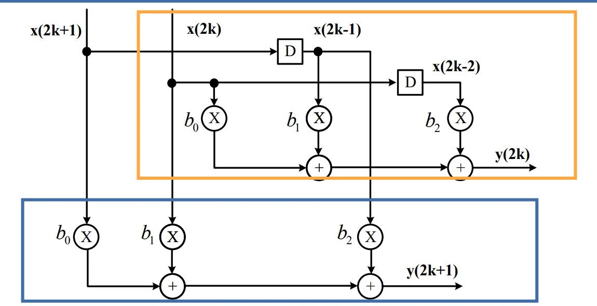
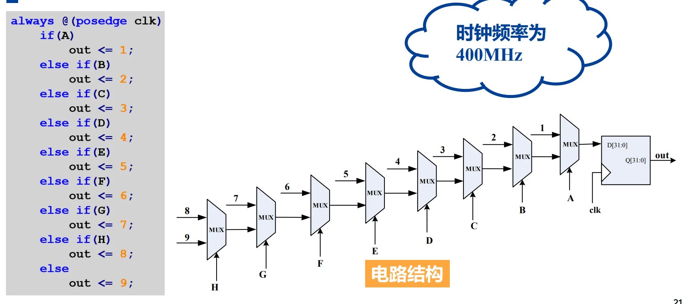
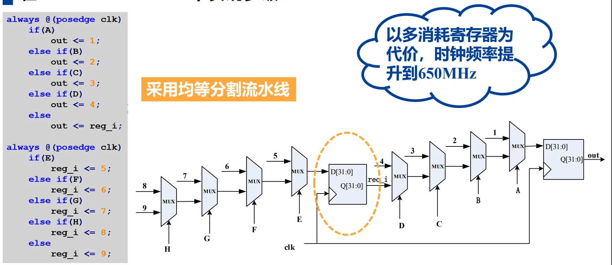
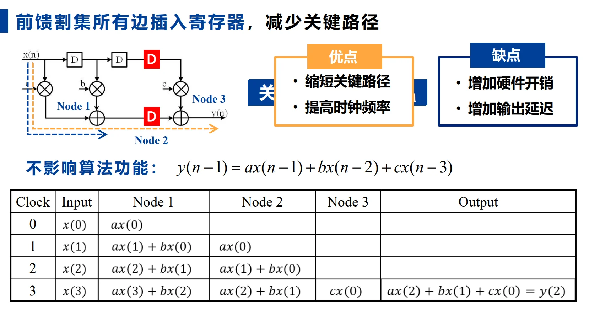
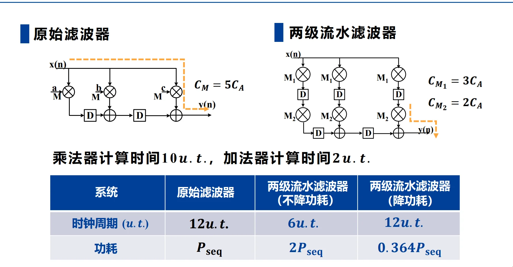
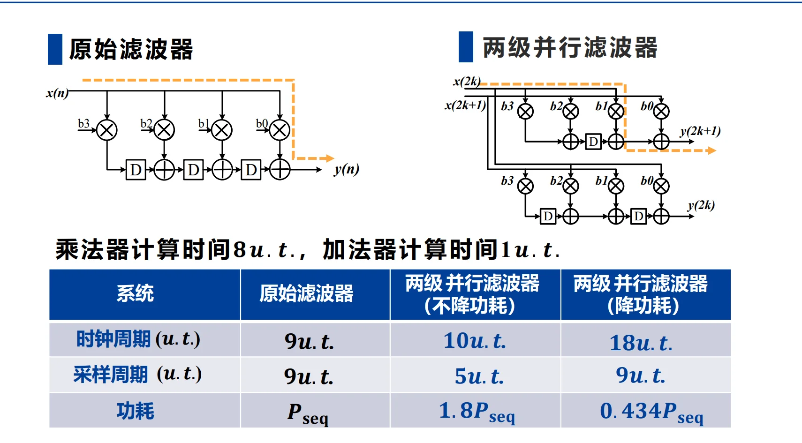

第四章 流水线和并行处理¶
一、并行处理技术¶
1. 核心概念¶
并行处理技术发掘计算中的同时性并发，通过复制硬件资源，将单输入单输出（SISO）串行系统转换为多输入多输出（MIMO）系统，实现多任务同时计算，提升系统处理能力。
2. 设计案例：3-Tap FIR滤波器¶
以3抽头FIR滤波器 \(y(2k)=b_{0}x(2k)+b_{1}x(2k-1)+b_{2}x(2k-2)\) 为例：
(1) 未并行

(2) 2级并行
将输入输出按奇偶序列拆分，时钟周期内同时处理2个样点
\begin{cases}
y(2k)=b_{0}x(2k)+b_{1}x(2k-1)+b_{2}x(2k-2)\\
y(2k+1)=b_{0}x(2k+1)+b_{1}x(2k)+b_{2}x(2k-1)
\end{cases}

- 3级并行：时钟周期内同时处理3个样点，采样周期进一步缩小
3. 核心特性¶
- 并行系统的关键路径与原串行系统保持不变；
- L级并行系统一个时钟周期可处理L个样点，迭代（采样）周期缩小为原系统的\(1/L\)；
- 时钟周期与采样周期解耦：\(T_{\text{clk}} = L\times T_{\text{sample}}\)
- 完整并行系统需配套串-并(S-P)转换器（输入预处理）和并-串(P-S)转换器（输出后处理）。
4. 优缺点¶
- 优点：可线性提升系统采样率，突破IO带宽限制；
- 缺点：硬件开销随并行级数L线性增长，成本高。
二、流水线技术¶
1. 核心概念¶
流水线技术通过在数据通路中插入寄存器，将长组合逻辑关键路径拆分为多段短路径，缩短单级组合逻辑延时，从而提升系统时钟频率，实现不同运算模块的交替式并发工作。
- 生活类比：洗衣流程（洗衣→烘干→折叠），流水线可让多批衣物的不同步骤并发执行，大幅提升总处理效率；
- 核心优势：相比并行处理，仅需增加少量寄存器硬件开销，即可显著提升性能。
2. 时序基础¶
寄存器与组合逻辑的时序约束公式：
T_co：寄存器时钟到输出的传播延时；T_data：寄存器间组合逻辑的延时；T_su：寄存器的建立时间；T_clk：系统时钟周期。
插入寄存器的本质，是将长组合逻辑延时T_data拆分为多段，每段延时均满足时序约束，从而降低最小可实现的T_clk，提升时钟频率。
3. 核心设计方法：割集与前馈割集¶
流水线寄存器的插入必须遵循前馈割集规则，否则会改变系统功能与传递函数：
- 割集：图的一组边，若移走这些边，原图会被拆分为两个互不相连的子图/孤立节点；
- 前馈割集：在一个数据流图、组合逻辑网络或电路有向图中，选取的一组边（或信号线），把这些边去掉后，图被分成“前级”和“后级”两部分，并且所有跨越这个分割的数据流都只沿前向方向从前级流向后级，不存在从后级返回前级的反馈路径。
- 设计规则：仅能在前馈割集的所有边上插入相同数量的寄存器，才能保证系统功能不变，同时缩短关键路径。
如何理解前馈割集与反馈环路？
首先想一个问题？为什么在前馈割集的所有边上加入流水线寄存器不影响功能？这是由前馈割集的定义决定的，前馈割集的每条边都是从前级流向后级的单向数据流，插入寄存器后，数据仍然沿同一方向流动，系统的输入输出关系不变；
那我们试想，会不会存在一个前馈割集，它的某条边是反馈环路中的某一条路径呢（或者说某个有向环的某条有向边）？
—— 不可能！因为为了满足割集的定义，如果存在一条边 e 是反馈环路中的某条路径，那么 必然存在零一条边 e' 同样属于这个反馈环路，并且 e' 从后级流向前级，这样就不满足前馈割集的定义了。
因此，有结论：不可能存在包含一条存在于一个有向环的边的前馈割集
这也就是说，反馈环路的存在会限制前馈割集的选择范围，好处就是我们在选择前馈割集时，不用考虑任何属于反馈环路的边！但是缺点也很明显：反馈环路积累的延迟，就是天王老子来了也救不了！因为前馈割集无法打断反馈环路上固有的长延迟！（当然，这里只是说流水线寄存器救不了）
这也就是说，反馈环路限定了一个时序电路系统的最高频率上限，无论如何添加流水线寄存器，增加流水深度，都无法突破这个上限。这个上限，就是迭代边界，或者说，所有环路边界的最大值 \(\underset{L}{\text{max}}\frac{D(L)}{W(L)}\)！
4. 设计案例¶
(1) 多级MUX流水线
原始多级选择器电路时钟频率400MHz，通过均等分割流水线插入寄存器后，时钟频率提升至650MHz，代价为增加寄存器开销。
例如：


(2) FIR滤波器流水线
3抽头FIR滤波器原始关键路径为T_M + 2T_A（乘法+2次加法），通过前馈割集插入寄存器后，关键路径缩短为T_M + T_A，时钟频率显著提升。

(4) 细粒度流水
针对超小时钟周期需求，可将运算单元拆分。例如乘法器延时T_M=10u.t.，目标时钟周期6u.t.，可将乘法器拆分为6u.t.和4u.t.的两个子单元，中间插入寄存器实现流水。
5. 特性与优缺点¶
核心特性¶
- M级流水线系统中，输入到输出任一路径的延迟数，比原系统多\(M-1\)个时钟周期；
- 仅能通过前馈割集插入寄存器，反馈路径不可随意插入寄存器，否则会改变系统极点与频率响应。
优缺点¶
- 优点：大幅缩短时钟周期、提升系统时钟频率，硬件开销增加少；
- 缺点：增加寄存器硬件开销；增加系统输出迟滞时间（Latency）；仅适合大量连续数据输入，非连续数据会产生“流水气泡”，降低流水线效率。
三、流水线与并行处理的功耗优化¶
1. CMOS电路功耗基础¶
芯片总功耗由动态功耗和静态功耗组成：
1. 静态功耗：\(P_{static} = I_{leakage} × V_{DD}\)，由MOS管漏电流决定，与芯片工艺强相关；
2. 动态功耗：\(P_{dynamic} = C_{total} × V_{DD}^2 × f\)，是电路设计可优化的核心，与电源电压\(V_{DD}\)的平方成正比，与总负载电容\(C_{total}\)、时钟频率\(f\)成正比；
3. 传播延时公式：
其中
k为MOS管跨导因子，V_t为MOS管阈值电压，系统最高时钟频率f = 1/max(T_pd)。
2. 流水线技术降低功耗¶
核心原理¶
流水线原本用于提升时钟频率，若保持系统原采样率/处理能力不变，可降低时钟频率，进而大幅降低电源电压\(V_{DD}\)；由于动态功耗与\(V_{DD}^2\)成正比，最终可实现系统功耗的显著降低。
设计方法与公式¶
- 原始电路：关键路径传播延时\(T_{seq}\)，电源电压\(V_0\)，功耗\(P_{seq}\)；
- M级流水线：将关键路径拆分为M段，单级传播延时\(T_{pipe}\)，电源电压\(V_{pipe} = βV_0\)（
β为电压降低因子）； - 核心求解方程：
\frac{C_{charge}/M × \beta V_{0}}{k × (\beta V_{0} - V_t)^2} = \frac{C_{charge} × V_0}{k × (V_0 - V_t)^2}
- 功耗降低比例：\(P_{pipe} = β^2 × P_{seq}\)
电容缩小为原来的\(1/M\)的原因：流水线将原系统的长组合逻辑路径拆分为M段，每段的负载电容约为原系统的\(1/M\)，因此每段的动态功耗也约为原系统的\(1/M\)。
应用案例¶
3抽头FIR滤波器，\(C_M=5C_A\)，\(V_t=0.6V\)，\(V_0=5V\)，采用2级流水线设计：
- 求解得\(\beta=0.6033\)；
- 系统动态功耗降为原始电路的\(36.4\%\)；
- 对比：若不降功耗，2级流水可将时钟周期减半、频率翻倍，功耗变为原始电路的2倍。

3. 并行处理技术降低功耗¶
核心原理¶
L级并行系统，保持系统原采样率不变，时钟频率可降低为原始系统的1/L，进而降低电源电压\(V_{DD}\)；尽管总负载电容随并行级数L线性增长，但\(V_{DD}^2\)的降低幅度更大，最终实现系统功耗下降。
设计方法与公式¶
- 原始电路：关键路径传播延时\(T_{seq}\)，电源电压\(V_{DD}\)，功耗\(P_{seq}\)；
- L级并行：时钟周期\(T_{para} = L×T_{seq}\)，电源电压\(V_{para} = βV_{DD}\)；
- 核心求解方程：
\frac{C_{charge} × \beta V_{DD}}{k × (\beta V_{DD} - V_t)^2} = L × \frac{C_{charge} × V_{DD}}{k × (V_{DD} - V_t)^2}
- 功耗降低比例：\(P_{para} = β^2 × P_{seq}\)
应用案例¶
4抽头FIR滤波器，\(C_M=8C_A\)，\(V_0=3.3V\)，\(V_t=0.45V\)，采用2级并行设计：
- 求解得\(\beta=0.6589\)；
- 系统动态功耗降为原始电路的\(43.4\%\)。

四、核心总结与适用场景对比¶
1. 流水线与并行处理的核心差异¶
| 特性 | 流水线技术 | 并行处理技术 |
|---|---|---|
| 并发类型 | 交替式并发，不同模块分时复用 | 同时性并发，多套硬件同时计算 |
| 硬件开销 | 仅增加少量寄存器，开销低 | 运算单元随并行级数线性增长，开销高 |
| 关键路径 | 拆分后单级路径缩短，时钟频率提升 | 关键路径与原系统一致，时钟频率不变 |
| 数据依赖 | 处理单元间有数据依赖，需通信 | 处理单元无数据依赖，可独立运行 |
2. 适用场景¶
- 流水线技术：适合通信未受限系统（关键路径延时 ≥ IO延迟边界），连续数据流场景，如视频编解码、连续信号处理；
- 并行处理技术：适合通信受限系统（关键路径延时 ≤ IO延迟边界），可通过增加IO数量突破传输速率限制，也适合高并行度的AI计算、多通道信号处理。
3. 核心价值¶
两种架构技术均可在不降低系统处理能力的前提下，通过降低电源电压实现动态功耗的显著降低，是VLSI数字系统高性能、低功耗设计的核心方法。